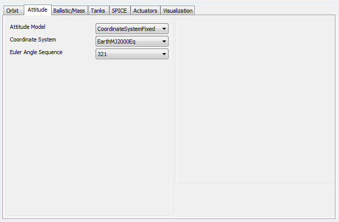
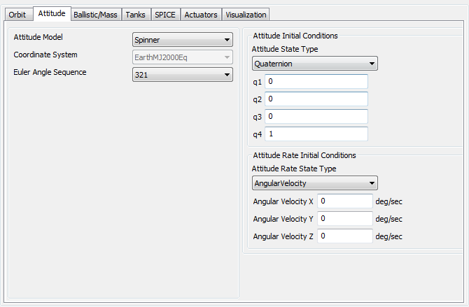
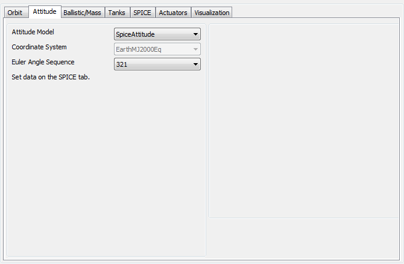
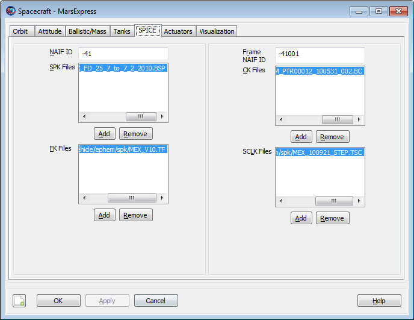
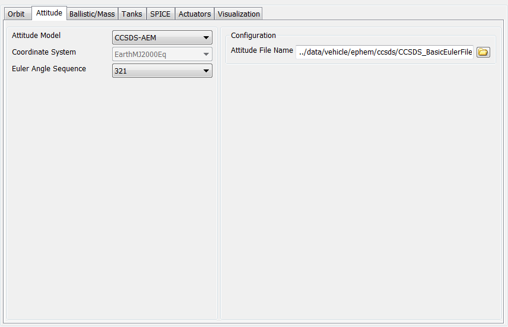

Spacecraft Attitude
Spacecraft Attitude — The spacecraft attitude model
Description
GMAT models the orientation and rate of rotation of a spacecraft using several different mathematical models. Currently, GMAT assumes that a Spacecraft is a rigid body. The currently supported attitude models are Spinner, CoordinateSystemFixed, and SpiceAttitude. The Spinner model is a simple, inertially fixed spin axis model. The CoordinateSystemFixed model allows you to use any CoordinateSystem supported by GMAT as the attitude of a Spacecraft. The SpiceAttitude model allows you to define the Spacecraft attitude based on SPICE attitude kernels.
See Also: Spacecraft
Fields
| Field | Description | ||||||||||||
|---|---|---|---|---|---|---|---|---|---|---|---|---|---|
| AngularVelocityX | The x-component of Spacecraft body angular velocity expressed in the inertial frame. AngularVelocityX is used for the following Attitude models: Spinner.
| ||||||||||||
| AngularVelocityY | The y-component of Spacecraft body angular velocity expressed in the inertial frame. AngularVelocityY is used for the following Attitude models: Spinner.
| ||||||||||||
| AngularVelocityZ | The z-component of Spacecraft body angular velocity expressed in the inertial frame. AngularVelocityZ is used for the following Attitude models: Spinner.
| ||||||||||||
| Attitude | The attitude mode for the Spacecraft.
| ||||||||||||
| AttitudeConstraintType | The constraint type for resolving attitude ambiguity. The attitude is computed such that the angle between the BodyConstraintVector and the constraint defined by AttitudeConstraintType is minimized. A Velocity constraint uses the inertial velocity vector expressed with respect to the AttitudeReferenceBody. An OrbitNormal constraint uses the orbit normal vector expressed with respect to the AttitudeReferenceBody. AttitudeConstraintType is used for the following attitude models: NadirPointing.
| ||||||||||||
| AttitudeCoordinateSystem | The CoordinateSystem used in attitude computations. The AttitudeCoordinateSystem field is only used for the following attitude models: CoordinateSystemFixed.
| ||||||||||||
| AttitudeFileName | Path (optional) and name of CCSDS attitude ephemeris message file. If a path is not provided, and GMAT does not find the file in the current directory, then an error occurs and execution is halted.
| ||||||||||||
| AttitudeRate-DisplayStateType | The attitude rate representation to display in the GUI and script file. AttitudeRateDisplayType is used for the following attitude models: Spinner.
| ||||||||||||
| AttitudeReferenceBody | The celestial body used to define nadir. AttitudeReferenceBody is used for the following attitude models: NadirPointing.
| ||||||||||||
| AttitudeSpiceKernelName | SPK Kernels for Spacecraft attitude. SPK atttitude kernels have extension ".BC". This field cannot be set in the Mission Sequence. An empty list unloads all kernels of this type on the Spacecraft.
| ||||||||||||
| BodyAlignmentVectorX | The x-component of the alignment vector, expressed in the body frame, to align with the opposite of the radial vector. BodyAlignmentVectorX is used for the following attitude models: NadirPointing.
| ||||||||||||
| BodyAlignmentVectorY | The y-component of the alignment vector, expressed in the body frame, to align with the opposite of the radial vector. BodyAlignmentVectorY is used for the following attitude models: NadirPointing.
| ||||||||||||
| BodyAlignmentVectorZ | The z-component of the alignment vector, expressed in the body frame, to align with the opposite of the radial vector. BodyAlignmentVectorZ is used for the following attitude models: NadirPointing.
| ||||||||||||
| BodyConstraintVectorX | The x-component of the constraint vector, expressed in the body frame. See NadirPointing description for further details. BodyConstraintVectorX is used for the following attitude models: NadirPointing.
| ||||||||||||
| BodyConstraintVectorY | The y-component of the constraint vector, expressed in the body frame. See NadirPointing description for further details. BodyConstraintVectorY is used for the following attitude models: NadirPointing.
| ||||||||||||
| BodyConstraintVectorZ | The z-component of the constraint vector, expressed in the body frame. See NadirPointing description for further details. BodyConstraintVectorZ is used for the following attitude models: NadirPointing.
| ||||||||||||
| BodySpinAxisX | The x-component of the spin axis, expressed in the body frame. BodySpinAxisX is used for the following attitude models: PrecessingSpinner.
| ||||||||||||
| BodySpinAxisY | The y-component of the spin axis, expressed in the body frame. BodySpinAxisY is used for the following attitude models: PrecessingSpinner.
| ||||||||||||
| BodySpinAxisZ | The z-component of the spin axis, expressed in the body frame. BodySpinAxisZ is used for the following attitude models: PrecessingSpinner.
| ||||||||||||
| DCM11 | Component (1,1) of the Direction Cosine Matrix. DCM11 is used for the following Attitude models: Spinner.
| ||||||||||||
| DCM12 | Component (1,2) of the Direction Cosine Matrix. DCM12 is used for the following Attitude models: Spinner.
| ||||||||||||
| DCM13 | Component (1,3) of the Direction Cosine Matrix. DCM13 is used for the following Attitude models: Spinner.
| ||||||||||||
| DCM21 | Component (2,1) of the Direction Cosine Matrix. DCM21 is used for the following Attitude models: Spinner.
| ||||||||||||
| DCM22 | Component (2,2) of the Direction Cosine Matrix. DCM22 is used for the following Attitude models: Spinner.
| ||||||||||||
| DCM23 | Component (2,3) of the Direction Cosine Matrix. DCM23 is used for the following Attitude models: Spinner.
| ||||||||||||
| DCM31 | Component (3,1) of the Direction Cosine Matrix. DCM31 is used for the following Attitude models: Spinner.
| ||||||||||||
| DCM32 | Component (3,2) of the Direction Cosine Matrix. DCM32 is used for the following Attitude models: Spinner.
| ||||||||||||
| DCM33 | Component (3,3) of the Direction Cosine Matrix. DCM33 is used for the following Attitude models: Spinner.
| ||||||||||||
| EulerAngle1 | The value of the first Euler angle. EulerAngle1 is used for the following Attitude models: Spinner.
| ||||||||||||
| EulerAngle2 | The value of the second Euler angle. EulerAngle2 is used for the following Attitude models: Spinner.
| ||||||||||||
| EulerAngle3 | The value of the third Euler angle. EulerAngle3 is used for the following Attitude models: Spinner.
| ||||||||||||
| EulerAngleRate1 | The value of the first Euler angle rate. EulerAngleRate1 is used for the following Attitude models: Spinner.
| ||||||||||||
| EulerAngleRate2 | The value of the second Euler angle rate. EulerAngleRate2 is used for the following Attitude models: Spinner.
| ||||||||||||
| EulerAngleRate3 | The value of the third Euler angle rate. EulerAngleRate3 is used for the following Attitude models: Spinner.
| ||||||||||||
| FrameSpiceKernelName | SPK Kernels for Spacecraft body frame. SPK Frame kernels have extension ".TF". This field cannot be set in the Mission Sequence. An empty list unloads all kernels of this type on the Spacecraft.
| ||||||||||||
| EulerAngleSequence | The Euler angle sequence used for Euler angle input and output..
| ||||||||||||
| InitialPrecessionAngle | The initial precession angle. InitialPrecessionAngle is used for the following attitude models: PrecessingSpinner.
| ||||||||||||
| InitialSpinAngle | The initial attitude spin angle. InitialSpinAngle is used for the following attitude models: PrecessingSpinner.
| ||||||||||||
| NAIFIdReferenceFrame | The Id of the spacecraft body frame used in SPICE kernels.
| ||||||||||||
| NutationAngle | The attitude nutation angle. NutationAngle is used for the following attitude models: PrecessingSpinner.
| ||||||||||||
| NutationReferenceVectorX | The x-component of the nutation reference vector, expressed in the inertial frame. NutationReferenceVectorX is used for the following attitude models: PrecessingSpinner.
| ||||||||||||
| NutationReferenceVectorY | The y-component of the nutation reference vector, expressed in the inertial frame. NutationReferenceVectorY is used for the following attitude models: PrecessingSpinner.
| ||||||||||||
| NutationReferenceVectorZ | The z-component of the nutation reference vector, expressed in the inertial frame. NutationReferenceVectorZ is used for the following attitude models: PrecessingSpinner.
| ||||||||||||
| MRP1 | The value of the first modified Rodrigues parameter. MRP1 is used for the following Attitude models: Spinner.
| ||||||||||||
| MRP2 | The value of the second modified Rodrigues parameter. MRP2 is used for the following Attitude models: Spinner.
| ||||||||||||
| MRP3 | The value of the second modified Rodrigues parameter. MRP2 is used for the following Attitude models: Spinner.
| ||||||||||||
| PrecessionRate | The rate of attitude precession. InitialPrecessionAngle is used for the following attitude models: PrecessingSpinner.
| ||||||||||||
| Q1 | First component of quaternion. GMAT’s quaternion representation includes the three “vector” components as the first three elements in the quaternion and the “rotation” component as the last element in the quaternion. Q1 is used for the following Attitude models: Spinner.
| ||||||||||||
| Q2 | Second component of quaternion. GMAT’s quaternion representation includes the three “vector” components as the first three elements in the quaternion and the “rotation” component as the last element in the quaternion. Q2 is used for the following Attitude models: Spinner.
| ||||||||||||
| Q3 | Third component of quaternion. GMAT’s quaternion representation includes the three “vector” components as the first three elements in the quaternion and the “rotation” component as the last element in the quaternion. Q3 is used for the following Attitude models: Spinner.
| ||||||||||||
| Q4 | Fourth component of quaternion. GMAT’s quaternion representation includes the three “vector” components as the first three elements in the quaternion and the “rotation” component as the last element in the quaternion. Q4 is used for the following Attitude models: Spinner.
| ||||||||||||
| Quaternion | The quaternion vector. GMAT’s quaternion representation includes the three “vector” components as the first three elements in the quaternion and the “rotation” component as the last element in the quaternion. Quaternion is used for the following Attitude models: Spinner.
| ||||||||||||
| SCClockSpiceKernelName | SPK Kernels for spacecraft clock. SPK clock kernels have extension ".TSC". This field cannot be set in the Mission Sequence. An empty list unloads all kernels of this type on the Spacecraft. An empty list unloads all kernels of this type on the Spacecraft.
| ||||||||||||
| SpinRate | The attitude spin rate. SpinRate is used for the following attitude models: PrecessingSpinner.
|
Remarks
Overview of Availble Attitude Models
GMAT supports many attitude models including the following: CoordinateSystemFixed, SpiceAttitude, NadirPointing, CCSDS-AEM, PrecessingSpinner, and Spinner (we recommend using thew new PrecessingSpinner model instead of Spinner). Different attitude models require different information to fully configure the model. For example, when you select the CoordinateSystemFixed model, the attitude and body rates are entirely determined by the CoordinateSystem model and defining Euler angles or angular velocity components are not required and have no effect. The reference tables above, and the detailed examples for each model type below, describe which fields are used for each model.
Note
GMAT attitude parameterizations such as the DCM rotate from inertial to body.
Overview of State Representations
Quaternion
The quaternion is a four element, non-singular attitude representation. GMAT’s quaternion representation includes the three “vector” components as the first three elements in the quaternion and the “rotation” component as the last element in the quaternion. In assignment mode, you can set the quaternions element by element like this
aSpacecraft.Q1 = 0.5
aSpacecraft.Q2 = 0.5
aSpacecraft.Q3 = 0.5
aSpacecraft.Q4 = 0.5 or simultaneously set the entire quaternion like this
aSpacecraft.Quaternion = [0.5 0.5 0.5 0.5]
GMAT normalizes the quaternion before use. In command mode, you must enter the entire quaternion as a single vector to avoid scaling components of the quaternion before the entire quaternion is set.
DirectionCosineMatrix (DCM)
The Direction Cosine Matrix is a 3x3 array that contains cosines of the angles that rotate from the x, y, and z inertial axes to the x, y, and z body axes. The direction cosine matrix must be ortho-normal and you define the DCM element by element. Here is an example that shows how to define the attitude using the DCM.
aSpacecraft.DCM11 = 1
aSpacecraft.DCM12 = 0
aSpacecraft.DCM13 = 0
aSpacecraft.DCM21 = 0
aSpacecraft.DCM22 = 1
aSpacecraft.DCM23 = 0
aSpacecraft.DCM31 = 0
aSpacecraft.DCM32 = 0
aSpacecraft.DCM33 = 1 Euler Angles
Euler angles are a sequence of three rotations about coordinate axes to transform from one system to another system. GMAT supports all 12 Euler angle sequences. Here is an example setting attitude using a “321” sequence.
aSpacecraft.EulerAngleSequence = '321'
aSpacecraft.EulerAngle1 = 45
aSpacecraft.EulerAngle2 = 45
aSpacecraft.EulerAngle3 = 90 Warning
Caution: The Euler angles have singularities that can cause issues during modeling. We recommend using other representations for this reason.
Modified Rogriques parameters
The modified Rodgriques parameters are a modification of the Euer Axis/Angle representation. Specifically, the MRP vector is equal to nhat* tan(Euler Angle/4) where nhat is the unitized Euler Axis.
aSpacecraft.MRP1 = 0.2928932188134525
aSpacecraft.MRP2 = 0.2928932188134524
aSpacecraft.MRP3 = 1.149673585146546e-017Euler Angles Rates
The Euler angle rates are the first time derivative of the Euler angles and can be used to define the body rates. Euler angle rates use the same sequence as the EulerAngles. The example below shows how to define the Euler angle rates for a spacecraft.
aSpacecraft.EulerAngleSequence = '321'
aSpacecraft.EulerAngleRate1 = -5
aSpacecraft.EulerAngleRate2 = 20
aSpacecraft.EulerAngleRate3 = 30 Angular Velocity
The angular velocity is the angular velocity of the spacecraft body with respect to the inertial frame, expressed in the inertial frame. The example below shows how to define the angular velocity for a spacecraft.
aSpacecraft.AngularVelocityX = 5;
aSpacecraft.AngularVelocityY = 10;
aSpacecraft.AngularVelocityZ = 5;Coordinate System Fixed Attitude Model
The CoordinateSystemFixed model allows you to use any existing CoordinateSystem to define the attitude of a Spacecraft. The attitude uses the axes defined on the CoordinateSystem to compute the body fixed to inertial matrix and attitude rate parameters such as the angular velocity. To configure this attitude mode, select CoordinateSystemFixed, for Attitude. You can define the EulerAngleSequence used when outputting EulerAngles and EulerAngle rates.
Warning
For the CoordinateSystemFixed attitude model, the attitude is completely described by the selected coordinate system. If you are working in the script, setting attitude parameters (Euler Angles, Quaternion etc.) or setting attitude rate parameters such as (Euler Angle Rates etc.) has no effect.
|  |
The script example below shows how to configure a Spacecraft to use a spacecraft VNB attitude system.
Create Spacecraft aSat
aSat.Attitude = CoordinateSystemFixed
aSat.ModelRotationZ = -90
aSat.AttitudeCoordinateSystem = 'attCoordSys'
Create ForceModel Propagator1_ForceModel
Create Propagator Propagator1
Propagator1.FM = Propagator1_ForceModel
Propagator1.MaxStep = 10
Create CoordinateSystem attCoordSys
attCoordSys.Origin = Earth
attCoordSys.Axes = ObjectReferenced
attCoordSys.XAxis = V
attCoordSys.YAxis = N
attCoordSys.Primary = Earth
attCoordSys.Secondary = aSat
Create OrbitView OrbitView1;
OrbitView1.Add = {aSat, Earth}
OrbitView1.ViewPointReference = Earth
OrbitView1.ViewPointVector = [ 30000 0 0 ]
BeginMissionSequence
Propagate Propagator1(aSat) {aSat.ElapsedSecs = 12000.0}Spinner Attitude Model
The Spinner attitude model propagates the attitude assuming the spin axis direction is fixed in inertial space. We recommend using the newer PrecessingSpinner model instead of Spinner, and this model is maintained primarily for backwards compatibility. You define the attitude by providing initial body orientation and rates. GMAT propagates the attitude by computing the angular velocity and then rotates the Spacecraft about that angular velocity vector at a constant rate defined by the magnitude of the angular velocity. You can define the initial attitude using quaternions, Euler angles, the DCM, or the modified Rodriques parameters. You can define the attitude rates using Euler angles rates or angular velocity. When working with Euler angles, the rotation sequence is determined by the EulerAngleSequence field.
Warning
Caution: If you are working in the script, setting the CoordinateSystem for the Spinner attitude model has no effect.
|  |
The example below configures a spacecraft to spin about the inertial z axis.
Create Spacecraft aSat;
aSat.Attitude = Spinner
aSat.ModelRotationZ = -90
aSat.AngularVelocityZ = 5
Create ForceModel Propagator1_ForceModel
Create Propagator Propagator1
GMAT Propagator1.FM = Propagator1_ForceModel
GMAT Propagator1.MaxStep = 10
Create CoordinateSystem attCoordSys
attCoordSys.Origin = Earth
attCoordSys.Axes = ObjectReferenced
attCoordSys.XAxis = V
attCoordSys.YAxis = N
attCoordSys.Primary = Earth
attCoordSys.Secondary = aSat
Create OrbitView OrbitView1;
OrbitView1.Add = {aSat, Earth}
OrbitView1.ViewPointReference = Earth
OrbitView1.ViewPointVector = [ 30000 0 0 ]
BeginMissionSequence
Propagate Propagator1(aSat) {aSat.ElapsedSecs = 12000.0}SPK Attitude Model
The SpiceAttitude model propagates the attitude using attitude SPICE kernels. To configure a Spacecraft to use SPICE kernels select SpiceAttitude for the Attitude field as shown below.
Warning
Caution: For the SpiceAttitude model, the attitude is completely described by the spice kernels. When working in the script, setting the CoordinateSystem, attitude parameters (EulerAngles, Quaternion etc.) or attitude rate parameters such as (EulerAngleRates etc.) has no effect.
|  |
You must provide three SPICE kernel types for the SpiceAttitude model: the attitude kernel (.bc file), the frame kernel (.tf file) and the spacecraft clock kernel (.tsc file). These files are defined on the Spacecraft SPICE tab as shown below. In addition to the kernels, you must also provide the Spacecraft NAIFId and the NAIFIdReferenceFrame. Below is an illustration of the SPICE tab configured for MarsExpress script found later in this section.
|  |
The example below configures a Spacecraft to use SPK kernels to propagator the attitude for Mars Express. The SPK kernels are distributed with GMAT.
Create Spacecraft MarsExpress
MarsExpress.NAIFId = -41
MarsExpress.NAIFIdReferenceFrame = -41001
MarsExpress.Attitude = 'SpiceAttitude'
MarsExpress.OrbitSpiceKernelName = ...
{'../data/vehicle/ephem/spk/MarsExpress_Short.BSP'}
MarsExpress.AttitudeSpiceKernelName = ...
{'../data/vehicle/ephem/spk/MarsExpress_ATNM_PTR00012_100531_002.BC'}
MarsExpress.SCClockSpiceKernelName = ...
{'../data/vehicle/ephem/spk/MarsExpress_MEX_100921_STEP.TSC'}
MarsExpress.FrameSpiceKernelName = ...
{'../data/vehicle/ephem/spk/MarsExpress_MEX_V10.TF'}
Create Propagator spkProp
spkProp.Type = SPK
spkProp.StepSize = 60
spkProp.CentralBody = Mars
spkProp.EpochFormat = 'UTCGregorian'
spkProp.StartEpoch = '01 Jun 2010 16:59:09.815'
Create CoordinateSystem MarsMJ2000Eq
MarsMJ2000Eq.Origin = Mars
MarsMJ2000Eq.Axes = MJ2000Eq
Create OrbitView Enhanced3DView1
Enhanced3DView1.Add = {MarsExpress, Mars}
Enhanced3DView1.CoordinateSystem = MarsMJ2000Eq
Enhanced3DView1.ViewPointReference = Mars
Enhanced3DView1.ViewPointVector = [ 10000 10000 10000 ]
Enhanced3DView1.ViewDirection = Mars
BeginMissionSequence
Propagate spkProp(MarsExpress) {MarsExpress.ElapsedDays = 0.2}Nadir Pointing Model
The NadirPointing attitude mode configures the attitude of a spacecraft to point a specified vector in the spacecraft body system in the nadir direction. The ambiguity in angle about the nadir vector is resolved by minimizing the angle between two constraint vectors. Note: the nadir pointing mode points the attitude in the negative radial direction (not opposite the planetodetic normal).
To configure which axis points to nadir, set the AttitudeReferenceBody field to the desired celestial body and define the body components of the alignment vector using the BodyAlignmentVector fields. To configure the constraint, set the AttitudeConstraintType field to the desired constraint type, and define the body components of the constraint using the BodyConstraintVector fields. GMAT supports two constraint types, OrbitNormal and Velocity, and in both cases the vectors are constructed using the inertial spacecraft state with respect to the AttitudeReferenceBody.
Warning
Attitude rates are not computed for the NadirPointing model. If you perform a computation that requires attitude rate information when using the NadirPointing mode, GMAT will throw an error message and execution will stop. Similarly, if the definitions of the BodyAlignmentVector and BodyConstraintVector fields result in an undefined attitude, an error message is thrown and execution will stop.
 |
The script example below shows how to configure a Spacecraft to use an Earth NadirPointing attitude system where the body y-axis points nadir and the angle between the body x-axis and the orbit normal vector is a minimum.
Create Spacecraft aSat;
GMAT aSat.Attitude = NadirPointing;
GMAT aSat.AttitudeReferenceBody = Earth
GMAT aSat.AttitudeConstraintType = OrbitNormal
GMAT aSat.BodyAlignmentVectorX = 0
GMAT aSat.BodyAlignmentVectorY = 1
GMAT aSat.BodyAlignmentVectorZ = 0
GMAT aSat.BodyConstraintVectorX = 1
GMAT aSat.BodyConstraintVectorX = 0
GMAT aSat.BodyConstraintVectorX = 0
Create ForceModel Propagator1_ForceModel
Create Propagator Propagator1
Propagator1.FM = Propagator1_ForceModel
Propagator1.MaxStep = 10
Create OrbitView OrbitView1;
OrbitView1.Add = {aSat, Earth}
OrbitView1.ViewPointReference = Earth
OrbitView1.ViewPointVector = [ 30000 0 0 ]
BeginMissionSequence
Propagate Propagator1(aSat) {aSat.ElapsedSecs = 12000.0}CCSDS Attitude Ephemeris Message
The CCSDS Attitude Ephemeris Message (AEM) is an ASCII standard for attitude ephemerides documented in “ATTITUDE DATA MESSAGES” RECOMMENDED STANDARD CCSDS 504.0-B-1. GMAT supports some, but not all, of the attitude messages defined in the standard. According to the CCSDS AEM specification, “The set of attitude data messages described in this Recommended Standard is the baseline concept for attitude representation in data interchange applications that are cross-supported between Agencies of the CCSDS.” Additionally, the forward of the standard states “Derived Agency standards may implement only a subset of the optional features allowed by the Recommended Standard and may incorporate features not addressed by this Recommended Standard. See the details below for supported keyword types and details for creating AEM files that GMAT can use for attitude modelling.
|  |
An AEM file must have the format illustrated below described in Table 4-1 of the standard. The header section contains high level information on the version, originator, and date. The body of the file is composed of paired blocks of Metadata and data. The Metadata sections contain information on the data such as the first and last epoch of the block, the time system employed, the reference frames, the attitude type (quaternion, Euler Angle, etc.) and many other items documented in later sections. The data sections contain lines of epoch and attitude data.
 |
An example CCSDS AEM file is shown below
CCSDS_AEM_VERS = 1.0
CREATION_DATE = 2002-11-04T17:22:31
ORIGINATOR = NASA/JPL
META_START
COMMENT This file was produced by M.R. Somebody, MSOO NAV/JPL, 2002 OCT 04.
COMMENT It is to be used for attitude reconstruction only.
COMMENT The relative accuracy of these attitudes is 0.1 degrees per axis.
OBJECT_NAME = MARS GLOBAL SURVEYOR
OBJECT_ID = 1996-062A
CENTER_NAME = mars barycenter
REF_FRAME_A = EME2000
REF_FRAME_B = SC_BODY_1
ATTITUDE_DIR = A2B
TIME_SYSTEM = UTC
START_TIME = 1996-11-28T21:29:07.2555
USEABLE_START_TIME = 1996-11-28T22:08:02.5555
USEABLE_STOP_TIME = 1996-11-30T01:18:02.5555
STOP_TIME = 1996-11-30T01:28:02.5555
ATTITUDE_TYPE = QUATERNION
QUATERNION_TYPE = LAST
INTERPOLATION_METHOD = hermite
INTERPOLATION_DEGREE = 7
META_STOP
DATA_START
1996-11-28T21:29:07.2555 0.56748 0.03146 0.45689 0.68427
1996-11-28T22:08:03.5555 0.42319 -0.45697 0.23784 0.74533
1996-11-28T22:08:04.5555 -0.84532 0.26974 -0.06532 0.45652
< intervening data records omitted here >
1996-11-30T01:28:02.5555 0.74563 -0.45375 0.36875 0.31964
DATA_STOP
META_START
COMMENT This block begins after trajectory correction maneuver TCM-3.
OBJECT_NAME = mars global surveyor
OBJECT_ID = 1996-062A
CENTER_NAME = MARS BARYCENTER
REF_FRAME_A = EME2000
REF_FRAME_B = SC_BODY_1
ATTITUDE_DIR = A2B
TIME_SYSTEM = UTC
START_TIME = 1996-12-18T12:05:00.5555
USEABLE_START_TIME = 1996-12-18T12:10:00.5555
USEABLE_STOP_TIME = 1996-12-28T21:23:00.5555
STOP_TIME = 1996-12-28T21:28:00.5555
ATTITUDE_TYPE = QUATERNION
QUATERNION_TYPE = LAST
META_STOP
DATA_START
1996-12-18T12:05:00.5555 -0.64585 0.018542 -0.23854 0.72501
1996-12-18T12:10:05.5555 0.87451 -0.43475 0.13458 -0.16767
1996-12-18T12:10:10.5555 0.03125 -0.65874 0.23458 -0.71418
< intervening records omitted here >
1996-12-28T21:28:00.5555 -0.25485 0.58745 -0.36845 0.67394
DATA_STOPCCSDS files require many keywords and fields, some are required for all file types, others are Situationally Required (SR) depending upon the type of file (i.e. If ATTITUDE_TYPE = QUATERNION, then QUATERNION_TYPE must be included). The tables below describe GMAT’s implementation starting with header keywords
| Keyword | Required | Description and Supported Values |
|---|---|---|
| CCSDS_AEM_VERS | Y | Format version in the form of ‘x.y’, where ‘y’ is incremented for corrections and minor changes, and ‘x’ is incremented for major changes. This particular line must be the first non-blank line in the file. In GMAT the version must be set to 1.0. If the version is not set to a supported version, then GMAT throws an exception. Example: CCSDS_AEM_VERS =1.0 |
| COMMENT | N | Comments (allowed after AEM version number and META_START and before a data block of ephemeris lines). Each comment line shall begin with this keyword. GMAT does not use this field. |
| CREATION_DATE | Y | File creation date/time in one of the following formats: YYYY-MM-DDThh:mm:ss[.d?d] or YYYY-DDDThh:mm:ss[.d?d] where ‘YYYY’ is the year, ‘MM’ is the two-digit month, ‘DD’ is the two-digit day, ‘DDD’ is the threedigit day of year, ‘T’ is constant, ‘hh:mm:ss[.d?d]’ is the UTC time in hours, minutes, seconds, and optional fractional seconds. As many ‘d’ characters to the right of the period as required may be used to obtain the required precision. All fields require leading zeros. GMAT does not use this field. |
| ORIGINATOR | Y | Creating agency (value should be specified in an ICD). GMAT does not use this field. |
MetaData Keywords are described in the table below.
| Keyword | Required | Description and Supported Values |
|---|---|---|
| META_START | Y | The AEM message contains both metadata and attitude ephemeris data; this keyword is used to delineate the start of a metadata block within the message (metadata are provided in a block, surrounded by ‘META_START’ and ‘META_STOP’ markers to facilitate file parsing). This keyword must appear on a line by itself. |
| COMMENT | N | Comments allowed only at the beginning of the Metadata section. Each comment line shall begin with this keyword. GMAT does not use this. Example: COMMENT This is a comment |
| OBJECT_NAME | Y | Spacecraft name of the object corresponding to the attitude data to be given. There is no CCSDS-based restriction on the value for this keyword, but it is recommended to use names from the SPACEWARN Bulletin, which include the Object name and international designator of the participant. Example: OBJECT_NAME = EUTELSAT Note: GMAT does not use this field. In GMAT, you associate a file with a particular spacecraft by configuring a particular spacecraft to use the file as shown below. |
| OBJECT_ID | Y | Spacecraft identifier of the object corresponding to the attitude data to be given. See the AEM specification for recommendations for spacecraft Ids. GMAT does not use this field. |
| CENTER_NAME | N | Origin of reference frame, which may be a natural solar system body (planets, asteroids, comets, and natural satellites), including any planet barycenter or the solar system barycenter, or another spacecraft (in this the value for ‘CENTER_NAME’ is subject to the same rules as for ‘OBJECT_NAME’). There is no CCSDS-based restriction on the value for this keyword, but for natural bodies it is recommended to use names from the NASA/JPL Solar System Dynamics Group . GMAT does not use this field. |
| REF_FRAME_A | Y | The name of the reference frame specifying one frame of the transformation, whose direction is specified using the keyword ATTITUDE_DIR. The full set of values is enumerated in annex A of the AEM standard, with an excerpt provided in the ‘Values / Examples’ column. In GMAT, REF_FRAME_A can be any of the following and must be different than REF_FRAME_B: EME2000, SC_BODY_1 Example: REF_FRAME_A = EME2000 REF_FRAME_A = SC_Body_1 |
| REF_FRAME_B | Y | The name of the reference frame specifying one frame of the transformation, whose direction is specified using the keyword ATTITUDE_DIR. The full set of values is enumerated in annex A of the AEM standard, with an excerpt provided in the ‘Values / Examples’ column. In GMAT, REF_FRAME_B can be any of the following and must be different than REF_FRAME_A: EME2000, SC_BODY_1 Example: REF_FRAME_A = EME2000 REF_FRAME_A = SC_Body_1 |
| ATTITUDE_DIR | Y | Rotation direction of the attitude specifying from which frame the transformation is to: A2B specifies a transformation from the REF_FRAME_A to the REF_FRAME_B; B2A specifies a transformation from the REF_FRAME_B to the REF_FRAME_A. Examples: ATTITUDE_DIR = A2B ATTITUDE_DIR = B2A |
| TIME_SYSTEM | Y | Time system used for both attitude ephemeris data and metadata. GMAT supports the following options: UTC Example: TIME_SYSTEM = UTC |
| START_TIME | Y | Start of TOTAL time span covered by attitude ephemeris data immediately following this metadata block. The START_TIME time tag at a new block of attitude ephemeris data must be equal to or greater than the STOP_TIME time tag of the previous block. See the CREATION_DATE specification for detailed information on time formats. Note: precision in the seconds place is only preserved to a few microseconds. Example: START_TIME = 1996-12-18T14:28:15.117 |
| USEABLE_ START_TIME, USEABLE_ STOP_TIME | N | Optional start and end of USEABLE time span covered by attitude ephemeris data immediately following this metadata block. To allow for proper interpolation near the ends of the attitude ephemeris data block, it may be necessary, depending upon the interpolation method to be used, to utilize these keywords with values within the time span covered by the attitude ephemeris data records as denoted by the START/STOP_TIME time tags. If this is provided, GMAT only uses data in the USEABLE timespan for interpolation. If it is not provided, GMAT uses the data in the START_TIME/STOP_TIME segment for interpolation. See the CREATION_DATE specification for detailed information on time formats. Example: USEABLE_ START_TIME = 1996-12-18T14:28:15.117 USEABLE_ STOP_TIME = 1996-12-18T14:28:15.117 |
| STOP_TIME | Y | End of TOTAL time span covered by the attitude ephemeris data immediately following this metadata block. The STOP_TIME time tag for the block of attitude ephemeris data must be equal to or less than the START_TIME time tag of the next block. See the CREATION_DATE specification for detailed information on time formats. Note: precision in the seconds place is only preserved to a few microseconds. Example: STOP_TIME = 1996-12-18T14:28:15.117 |
| ATTITUDE_TYPE | Y | The format of the data lines in the message. GMAT supports the following types ATTITUDE_TYPE = QUATERNION ATTITUDE_TYPE = EULER_ANGLE |
| QUATERNION_TYPE | SR | The placement of the scalar portion of the quaternion (QC) in the attitude data. This keyword is only used if ATTITUDE_TYPE denotes quaternion and in that case the field is required. Example: QUATERNION_TYPE = FIRST QUATERNION_TYPE = LAST |
| EULER_ROT_SEQ | SR | The rotation sequence of the Euler angles that rotate from REF_FRAME_A to REF_FRAME_B, or vice versa, as specified using the ATTITUDE_DIR keyword. This keyword is only used if ATTITUDE_TYPE denotes EulerAngles and in that case the field is required. Example: EULER_ROT_SEQ = 321 |
| RATE_FRAME | N | GMAT does not use this field. |
| INTERPOLATION _METHOD | N | Recommended interpolation method for attitude ephemeris data in the block immediately following this metadata block. Note. GMAT uses spherical linear interpolation when ATTITUDE_TYPE = QUATERNION. GMAT uses lagrange interpolation for ATTITUDE_TYPE = EULER_ANGLE. Examples: INTERPOLATION _METHOD = LINEAR INTERPOLATION _METHOD = LAGRANGE |
| INTERPOLATION _DEGREE | SR | Recommended interpolation degree for attitude ephemeris data in the block immediately following this metadata block. It must be an integer value. This keyword must be used if the ‘INTERPOLATION_METHOD’ keyword is used. The field is only used for Lagrange Interpolation and in that case the value must be between 0 and 9. In the case order is zero for Lagrange interpolation, no interpolation is performed, and the attitude returned is the value immediately before the requested epoch. Example: INTERPOLATION _DEGREE = 7 |
| META_STOP | Y | The end of a metadata block within the message. The AEM message contains both metadata and attitude ephemeris data; this keyword is used to delineate the end of a metadata block within the message (metadata are provided in a block, surrounded by ‘META_START’ and ‘META_STOP’ markers to facilitate file parsing). This keyword must appear on a line by itself. |
Data Keywords are described in the table below.
| Keyword | Required | Description and Supported Values |
|---|---|---|
| DATA_START | Y | The start of an attitude data block within the message. The AEM message contains both metadata and attitude ephemeris data; this keyword is used to delineate the start of a data block within the message (data are provided in a block, surrounded by ‘DATA_START’ and ‘DATA_STOP’ markers to facilitate file parsing). This keyword must appear on a line by itself. |
| DATA_STOP | Y | The end of an attitude data block within the message. The AEM message contains both metadata and attitude ephemeris data; this keyword is used to delineate the end of a data block within the message (data are provided in a block, surrounded by ‘DATA_START’ and ‘DATA_STOP’ markers to facilitate file parsing). This keyword must appear on a line by itself. |
| QUATERNION | SR | Required when ATTITUDE_TYPE = QUATERNION. The general format of a quaternion data line is: Epoch, QC, Q1, Q2, Q3 or Epoch, Q1, Q2, Q3, QC Example: 2000-01-01T11:59:28.000 0.195286 -0.079460 0.3188764 0.92404936 |
| EULER ANGLE | SR | Required when ATTITUDE_TYPE = EULER_ANGLE. The general format of an Euler angle data line is: Epoch, X_Angle, Y_Angle, Z_Angle. Example: 2000-001T11:59:28.000 35.45409 -15.74726 18.803877 |
Propagate a spacecraft's attitude using a CCSDS AEM file
Create Spacecraft aSat ;
GMAT aSat.Attitude = CCSDS-AEM;
GMAT aSat.AttitudeFileName = ...
'../data/vehicle/ephem/ccsds/CCSDS_BasicEulerFile.aem'
Create Propagator aProp;
Create OrbitView a3DView
a3DView.Add = {aSat,Earth}
BeginMissionSequence;
Propagate aProp(aSat) {aSat.ElapsedSecs = 3600};Precessing Spinner Model
The PrecessingSpinner attitude mode configures the attitude of a spacecraft to have steady-state precession motion with respect to a specified vector defined in the inertial frame. The spin axis must be provided in the spacecraft body frame.
To configure the spin axis of the spacecraft body, set the BodySpinAxis, which is expressed in the body frame, and define the reference vector of the steady-state precession motion using the NutationReferenceVector, which is expressed in the inertial frame. To configure the initial attitude of the spacecraft, set InitialPrecessionAngle to define the initial angle of the precession, set InitialSpinAngle to define the initial angle of the spin, and set NutationAngle to define the nutation angle which is constant. To configure the rate of precession and spin rate, set PrecessingRate and SpinRate which are constant.
Note
The PrecessingSpinner model uses the cross product of the BodySpinAxis axis and the inertial x-axis as a reference for the initial attitude. To avoid an undefined attitude when the spin axis is aligned, or nearly aligned, with the inertial x-axis, a different reference vector is used in that case. In the event that the cross product of BodySpinAxis and the inertial x-axis is less than 1e-5, the inertial y-axis is used as the reference vector. For further details see the engineering/mathematical specifications.
 |
The script example below shows how to configure a Spacecraft to have PrecessingSpinner attitude mode where the body z-axis spins with respect to the inertial z-axis. PrecessionRate is set to 1 deg./sec., InitialPrecessionAngle is set to 0 deg./sec., SpinRate is set to 2 deg./sec., InitialSpinAngle is set to 0 deg./sec., and NutationAngle is set to 30 deg.
Create Spacecraft aSat;
GMAT aSat.Attitude = PrecessingSpinner;
GMAT aSat.NutationReferenceVectorX = 0;
GMAT aSat.NutationReferenceVectorY = 0;
GMAT aSat.NutationReferenceVectorZ = 1;
GMAT aSat.BodySpinAxisX = 0;
GMAT aSat.BodySpinAxisY = 0;
GMAT aSat.BodySpinAxisZ = 1;
GMAT aSat.InitialPrecessionAngle = 0;
GMAT aSat.PrecessionRate = 1;
GMAT aSat.NutationAngle = 30;
GMAT aSat.InitialSpinAngle = 0;
GMAT aSat.SpinRate = 2;
Create OrbitView OrbitView1;
OrbitView1.Add = {aSat, Earth}
OrbitView1.ViewPointReference = Earth
OrbitView1.ViewPointVector = [ 30000 0 0 ]
Create Propagator aProp
aProp.MaxStep = 10
BeginMissionSequence
Propagate aProp(aSat) {aSat.ElapsedSecs = 12000.0}